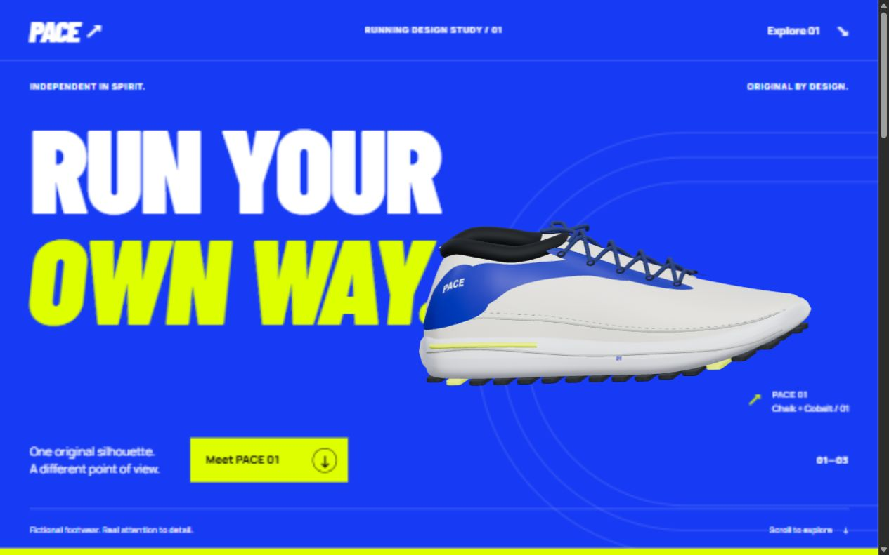
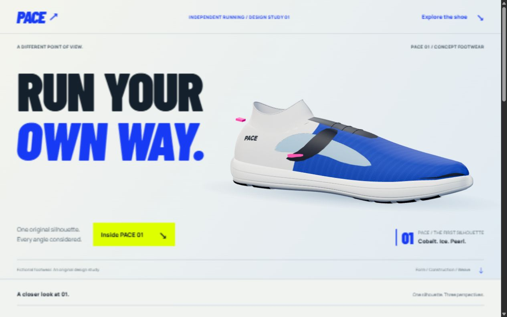
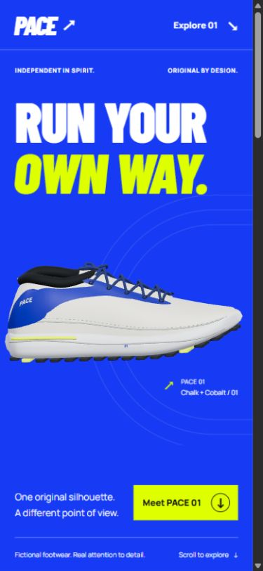
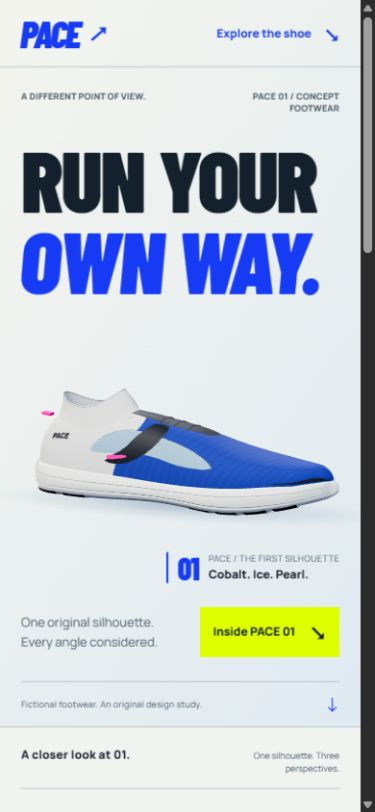
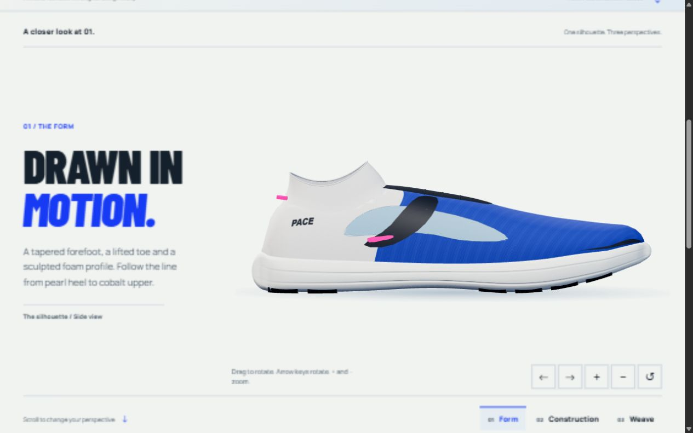
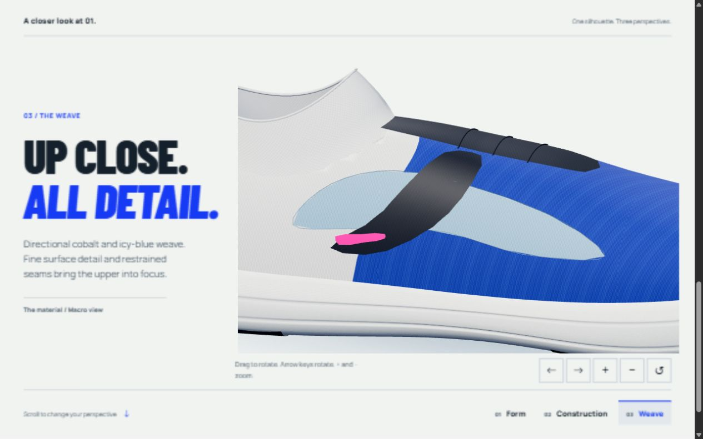

Local review · October 1, 2026 · Fictional product
PACE. A new point of view.
The shoe was rebuilt around a tapered last, fitted collar and directional fabric maps. One native-scroll scheduler now maps directly to a consistent camera path. All current views share the final original geometry.
Open local experience · Static fallback · Measurement methodology
Desktop opening

Before — original shoe and composition.
After — final asset and composition.Phone opening

Before.
After — product appears in the opening.The final asset, closer

Side perspective.
Purpose-made camera angle showing the fitted collar, instep and fabric.Runtime evidence and limits
Captured workload fell from 22 draw calls / 56,870 triangles to 8 / 12,838. Warm CPU submission median was 0.3 ms before and 0.2 ms after; p95 was 0.6 and 0.7 ms. Setup remained approximately 200 ms. These are in-app-browser samples, not proof of a controlled FPS improvement.
Keyboard, rapid controls, responsive layouts, history, reduced motion and actual WebGL context loss were checked. Chrome automation and full-page recording were unavailable. Physical-phone performance and hidden-tab suspension remain unverified live. The shoe is a stylized procedural concept, not photoreal footwear or manufacturing CAD.